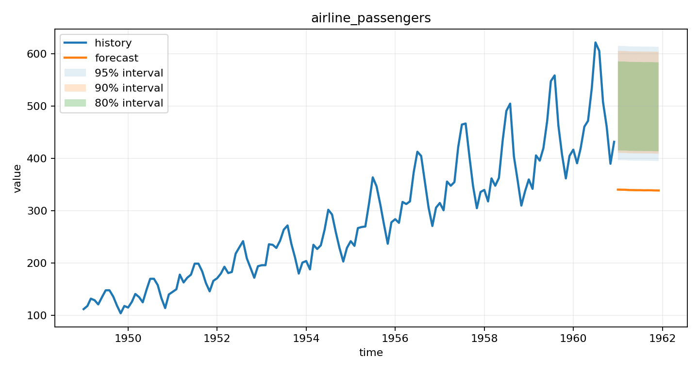
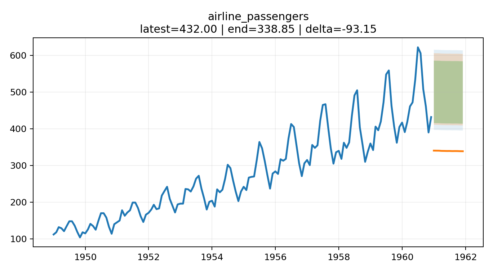
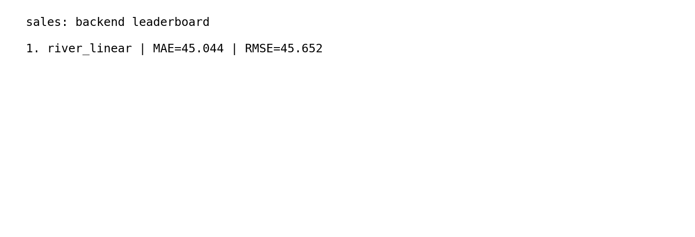
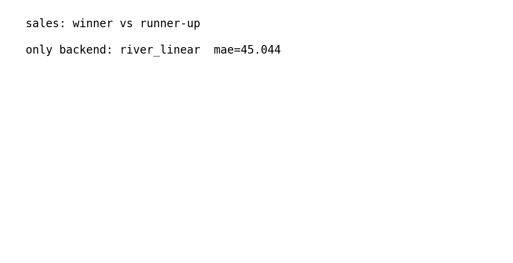

Enable conformal intervals with a stable list of levels.
Uncertainty
Calibrated prediction intervals
Generate interval bands without changing the forecast.csv contract and inspect coverage and width diagnostics.
conformalintervalsdiagnostics
Dataset context
Airline passengers
Real monthly airline passenger counts used widely in forecasting benchmarks because the seasonal growth pattern is easy to interpret.
Provenance: Public historical airline passenger series mirrored by Jason Brownlee's Datasets repository.
Why this example
What it teaches
Intervals are easier to evaluate when the series is a real historical benchmark with a familiar seasonal pattern.
Inspect lower_* and upper_* columns in forecast.csv.
Review empirical coverage and interval width from diagnostics before trusting the band.
Source data: Airline passengers.
This run used River jackknife intervals through `river_linear`.
Run it
Python API first
Start with the importable API if you are reading this as a person. The CLI stays available below for automation and CI.
This is the shortest read-data, call-function, inspect-result path.
import pandas as pd
from agentforecast import ConformalSpec, forecast_dataframe
df = pd.read_csv("https://raw.githubusercontent.com/jbrownlee/Datasets/master/airline-passengers.csv")
conformal = ConformalSpec(
enabled=True,
method="auto",
levels=(80, 90, 95),
calibration_window=60,
warmup_min=10,
)
result = forecast_dataframe(
df,
name="airline_passengers",
backend="river_linear",
horizon=12,
conformal=conformal,
outdir="demo",
)
print(result.diagnostics["conformal"]["coverage_backtest"])
Keep the command-line version for pipelines, agents, and reproducible shell runs.
python -m agentforecast.cli forecast-csv C:/Users/wzp07/OneDrive/文档/data library/AgentTSForcasting/agentforecast_v1_7/agentforecast/package_data/public_examples/airline_passengers.csv --backend river_linear --conformal --conformal-method auto --levels 80,90,95 --calibration-window 60 --warmup-min 10 --horizon 12 --outdir examples/generated/calibrated-intervals
Result
Executed outcome
Compared 1 backend(s) and routed the series to 'river_linear'. Exported CSV, chart, card, markdown, and JSON artifacts.
Selected backend
river_linearDataset
Airline passengersHorizon
12MAE
174.42Projected end
338.85Artifacts
12Coverage 90
0.8333Avg width 90
176.40Visuals
Generated charts and cards
These previews are copied from the real run artifacts written under the example output directory.
{kind=link}

Forecast chart
forecast_png

Backend comparison
comparison_png
{kind=link}

Forecast card
forecast_card_png
{kind=link}

Leaderboard card
leaderboard_card_png
{kind=link}

Winner delta card
delta_card_png
Leaderboard
Backend evidence
The winning backend is shown together with the competing candidates.
| Backend | MAE | RMSE | sMAPE |
|---|---|---|---|
| river_linear | 174.42 | 189.70 | 43.496 |
Routing
Routing rationale
The package keeps routing visible so backend choice is inspectable.
{
"profile": "explicit",
"reason": "explicit_backend_selected",
"candidate_backends": [
"river_linear"
],
"recommended_extras": []
}
Uncertainty
Conformal diagnostics
Coverage and interval width are part of the example, not an afterthought.
{
"enabled": true,
"requested_method": "auto",
"method": "river_jackknife",
"levels": [
80,
90,
95
],
"calibration_window": 60,
"warmup_min": 10,
"symmetric": true,
"horizon_aware": true,
"effective_horizon_aware": false,
"calibration_size": 12,
"native_levels": [
80,
90,
95
],
"fallback_reason": null,
"backend_id": "river_linear",
"coverage_backtest": {
"80": 0.75,
"90": 0.833333,
"95": 0.833333
},
"mean_interval_width": {
"80": 155.646406,
"90": 176.395032,
"95": 191.320653
},
"width_normalized_coverage": {
"80": 2.294464,
"90": 2.249528,
"95": 2.074034
},
"backend_tags": [
"streaming",
"fast",
"supports_conformal_native"
]
}
Artifacts
Open exported files
The example page links directly to the copied artifacts so you can inspect data, reports, and metadata without leaving the site.
assets/calibrated-intervals/history.csvOpen artifactassets/calibrated-intervals/forecast.csvOpen artifactassets/calibrated-intervals/leaderboard.csvOpen artifactassets/calibrated-intervals/forecast.pngOpen artifactassets/calibrated-intervals/forecast_card.pngOpen artifactassets/calibrated-intervals/backend_comparison.pngOpen artifactassets/calibrated-intervals/leaderboard_card.pngOpen artifactassets/calibrated-intervals/winner_vs_runnerup_delta.pngOpen artifactassets/calibrated-intervals/summary.mdOpen artifactassets/calibrated-intervals/metadata.jsonOpen artifactassets/calibrated-intervals/calibrated_intervals.pyOpen artifactassets/calibrated-intervals/example.jsonOpen artifact